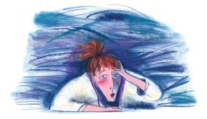

Almost everyone gets headaches. According to the American Headache Society (AHS), 90 percent of men and 95 percent of women have at least one headache a year. And an unfortunate 12 million Americans endure chronic headaches - meaning they have headaches more than 15 days out of every month.
Seventy-five percent of people with headaches have tension headaches, with steady, vise-like pain on both sides of the head and/or neck. Many of us respond to a frenetic day by tightening these muscles, which can lead to pain. In fact, if you contract any muscle hard enough for long enough, you’ll reduce blood supply, which can cause pain - just try clenching your fist for five minutes.
About 12 percent of people experience migraines, and three quarters of these are women. The pain is usually throbbing, localized to one side of the head, accompanied by nausea with or without vomiting, and sensitivity to light and sound. About one in five migraine sufferers (also called migraineurs - so French it ought to be fun) gets some advance notice by way of an aura, or visual disturbance. Auras can include brightly colored or blinking lights that move across the migraineur’s field of vision.
Cluster headaches are rare, severe and primarily afflict men. The pain tends to localize around one eye, which becomes red and watery, though mercifully, doesn’t last more than an hour. Unfortunately, this headache typically recurs over a period of days. Alcohol is a common trigger, and patients frequently have a history of heavy smoking and drinking.
Whatever the headache type, the good news is that many therapies can reduce headache pain and better yet, prevent it. These include eating well, sleeping enough, engaging in regular and relaxing physical activity, and not letting stress knot mind and muscle. Vitamins, minerals and herbs represent a second tier of self-treatment, while biofeedback and acupuncture provide further nonpharmacologic relief. And drugs, used wisely, can spare you from spending the day in a dark, quiet bedroom at the mercy of a migraine.
If you have frequent head pain, try keeping a diary to help you pinpoint triggers. Do particular emotions set you off? What about the weather, smells, dehydration, specific foods, skipping meals or sleep? If you’re a woman, do bouts of pain come in sync with your menses or the use of female hormones?
Is the pain worse in the morning and centered around your jaw? Has your dentist ever mentioned worn enamel and broken molars? If yes, you may unconsciously clench or grind your teeth. Your dentist can make you a custom-fitted appliance called an occlusal guard that covers your lower or upper teeth.
This sort of detective work is useful, but confounded by the fact that a number of factors can conspire to pull the pin out of the headache grenade. It might take stress, insufficient sleep, a skipped meal, a glass of red wine and an impending menstrual period to set off the explosion. But once you track down what’s causing your headaches, you’ll be able to take preventive actions. See Understanding & Beating Headaches for a quick guide.
Stress and anxiety play a major role in tension and migraine headaches. Anxiety and overreactions to stress in childhood have been linked to migraines in adulthood. Think about it - when you feel overworked and worried, where do you feel this tension? In your neck, shoulders, face and scalp.
Studies show that lightening your stress load relieves headaches. For instance, a 2001 study published in the Journal of the American Medical Association showed stress management therapy was as effective as medication in people with chronic tension headaches.
Several methods can favorably change the way we cope with stress - both physically and mentally. Yoga, meditation and aerobic exercise all diffuse stress and help relax muscles - plus meditation can help people manage pain. Cognitive behavioral therapy, a form of psychotherapy, can eradicate self-sabotaging thoughts and behaviors that amplify stress. Progressive muscle relaxation teaches you to first deliberately tense muscle groups, then appreciate the feeling as you let them unclench. Massage, with or without calming herbal essential oils, is another stress buster and improves blood flow to afflicted areas. If you don’t have the budget and time for frequent massages, you might ask your therapist to teach you how to work on your trigger points.
How do you stop storing stress in your head and neck muscles? The first step is becoming aware of muscle tension. One means to this end is electromyographic (EMG) biofeedback. Electrodes or other sensors measure muscle tension, then auditory or visual cues give you feedback about the degree of tension. In this way, you can learn to recognize and release tight muscles before they cause pain. Portable, hand-held biofeedback devices make it possible to use this stress-relieving technique anywhere.
Biofeedback works, and children and teens can be particularly good at it. When 35 adoles cents engaged in six sessions of EMG biofeedback, they enjoyed an 86 percent reduction in tension headaches. Alexander Mauskop, M.D., director of the New York Headache Center and a noted researcher, also finds biofeedback a boon to pregnant women, who can’t take painkillers.
Is the effort you might put into managing stress worth it? Absolutely - according to the American Institute of Stress, stress has been linked to the following disorders: depression, anxiety, heart attacks, stroke, hypertension, increased susceptibility to infections and many others. Plus, a 2002 analysis of three decades of behavioral interventions (biofeedback, relaxation training, stress management and cognitive behavioral therapy) reported a 35 percent to 50 percent reduction in migraine and tension headache activity - an improvement, the authors noted, that “may rival those obtained with widely used pharmacologic therapies.” While learning to relax demands more time than popping a pill, its effects are enduring.
Disturbances in sleep patterns, such as insufficient sleep, too much sleep and jet travel across multiple time zones, can trigger headaches. A study in children and teens found that nondrug strategies to improve sleep habits reduced the frequency of migraines (see Sleep Deeply, Live Longer).
Melatonin is a pineal gland hormone that rises at night and regulates many biorhythms, including the sleep-wake cycle. Although the evidence is mixed for using melatonin to treat sleep disturbances, new research demonstrates people with cluster headaches and migraines have low melatonin levels. Preventive melatonin supplementation proved particularly helpful in those with cluster headaches.
Acupuncture also is widely used to treat headaches. This sort of needling has an analgesic effect, and some studies support its use in headache treatment and prevention. For instance, in a recent study, acupuncture treatment compared favorably to preventive migraine treatment with a beta-blocker called metoprolol. Electrically stimulating the needles also has produced benefits in reducing tension headaches.
In 1979, a study in The Lancet reported that 85 percent of migraineurs markedly reduced headaches when they avoided common foods such as wheat, oranges, dairy, corn, beef, tea and coffee. Subsequent studies also supported the role of food intolerance in migraines.
Based on his work at the New York Headache Center, Mauskop’s list of foods and beverages that commonly trigger migraines in susceptible people includes chocolate, yogurt, buttermilk, bananas, dried fruit, beans, aged cheese, citrus fruits, pickled and marinated foods, beer and wine. Also try to avoid the preservative sodium nitrate (in hotdogs and lunchmeat), the food additive monosodium glutamate (MSG, found in processed foods - sometimes listed as hydrolyzed protein) and the artificial sweetener aspartame (Equal, NutraSweet).
It’s important to keep eating, however, because low blood sugar can set off headaches. The trick is to find your personal offenders. To do that, avoid the most common problem foods for a few weeks, then add back one food at a time. Note what happens in your headache diary.
The role of caffeine is less straightforward. In people who aren’t java or soda junkies, caffeine relieves migraine headaches by constricting blood vessels surrounding the brain (the dilation is part of the pain process), which is why it’s often packaged with aspirin and other analgesics. Overuse of these medications, however, can result in chronic headaches. More on that below.
But regular heavy coffee consumption, as well as withdrawal from caffeine-containing beverages, can actually cause headaches. Caffeine-induced chronic headaches have even been reported in cola-swigging children. Mauskop emphasizes that as little as 2 or 3 cups of coffee a day can worsen headaches through withdrawal. If you’ve ever slept late, delaying that first cup of coffee, you may have experienced this particular type of dull ache. Experts generally recommend that people with frequent headaches reduce or eliminate caffeine intake.
Small clinical trials support the use of three supplements to thwart headache pain: magnesium, riboflavin (vitamin B2) and coenzyme Q10.
Magnesium. Mauskop’s research shows that intravenous magnesium helps break migraine and cluster headaches, particularly in those with low levels of this mineral. Other trials also have shown that oral magnesium may help prevent headaches. Magnesium deficiency is particularly common in women with menstrual migraines. Mauskop routinely recommends patients with migraines take 400 to 600 milligrams a day of magnesium oxide, as this form is effective and inexpensive. Magnesium can loosen the bowels, a problem usually solved by experimenting with different forms, such as magnesium glycinate, magnesium citrate or magnesium chloride.
Riboflavin. The research on riboflavin is less extensive, but nonetheless encouraging. In an open-label trial (no placebo control group), 400 milligrams a day for six months cut migraine headache frequency in half and decreased medication use. Another study showed that three months of riboflavin led to a 50 percent improvement in almost 60 percent of the volunteers, versus a 15 percent improvement over the people taking a dummy pill.
Coenzyme Q10. This vitaminlike substance participates in mitochondrial energy production. When 42 migraineurs took either coenzyme Q10 (100 milligrams three times a day) or a placebo, the supplement significantly reduced the frequency of attacks. An earlier study without a placebo group also showed significant improvement.
Feverfew (Tanacetum parthenium) looks like a tiny daisy and, in fact, comes from the same tribe of plants (Asteraceae). Active ingredients, such as parthenolide, reduce pain and inflammation, decrease platelet adhesion, and prevent mast cells from releasing histamine, which causes blood vessels to dilate and leak fluids.
Out of eight studies on feverfew’s ability to prevent migraines, most found some degree of benefit. A 2004 analysis of five studies judged feverfew’s effectiveness unconvincing. However, in a recent, well-designed clinical trial, 170 German patients took a placebo pill or an extract of feverfew for 16 weeks. Those taking feverfew had significantly fewer migraines.
Feverfew is usually taken daily to prevent, rather than treat, migraines. If you do take feverfew long-term, know that there have been some reports of rebound headaches upon discontinuing the herb. Herbal experts often recommend tapering off the dose.
Butterbur (Petasites hybridus) also is a member of the Asteraceae family. Traditionally used to treat spasms in the respiratory and digestive tract, the leaves and rhizomes contain petasin, which relaxes smooth muscle tissue and also inhibits the formation of inflammatory substances called leukotrienes. The plant also contains liver toxins called pyrrolizidine alkaloids (PAs), so it’s important to choose a formula that’s PA-free. Three clinical trials (including one in children and teens) have shown that this herb, taken preventively, safely and effectively reduces the number of migraines. Benefits become obvious at about four weeks.
Over-the-counter nonsteroidal anti-inflammatory drugs (NSAIDs) - aspirin, naproxen (Aleve) and ibuprofen (Advil, Motrin) - reduce pain and inflammation, and can head off mild headaches. But when the recommended dose is exceeded, they carry a risk of gastrointestinal bleeding. And acetaminophen, the active ingredient in Tylenol, can cause serious liver damage when misused. In fact, the U.S. Federal Drug Administration proposed new labeling rules to make consumers more aware of the dangers associated with these drugs.
Another group of drugs called “triptans” can nip migraine pain in the bud. This class of drugs includes sumatriptan (Imitrex), rizatriptan (Maxalt) and zolmitriptan (Zomig). Unfortunately, people with uncontrolled high blood pressure and heart disease can’t take triptans because they can constrict not only the cerebral (brain) arteries, but also the coronary (heart) arteries.
Paradoxically, the very drugs that bring headache relief can, with repeated use, give rise to chronic daily headaches. Though the cause of this phenomenon remains uncertain, researchers think continued overuse of analgesics may sensitize central pain pathways. And it doesn’t take much medication to develop an overuse problem. Just three months of taking simple analgesics (Advil, Motrin, etc.) for 15 days a month can trigger daily headaches; as can stronger medications such as triptans, opioids or combination analgesics (Fiorinal, Fioricet) taken just 10 days a month. The cure involves stopping these medications, which sounds simple until you factor in the rebound headache, which can last four days. Talk to your doctor about strategies for slowly tapering off medications and reducing pain during the transition.
Headaches unfairly pick on the female sex - three out of four migraine sufferers are women. Hormonal fluctuations at menses, during pregnancy and menopause all trigger migraines.
Oral contraceptive pills represent a sticky wicket for women with migraines. In some women, oral contraceptives can lead to migraines during the week you take the inactive pills without estrogen and progestin. In women who have a migraine aura, supplemental hormones may worsen migraines. Furthermore, some experts recommend women who get migraines with auras not take oral contraceptives, due to an increased risk of stroke. (Women who have migraines, smoke and take the pill face a 34-fold increased stroke risk!)
If you experience a clear headache pattern, as with menstrual migraines, try medicating yourself a day or two in advance. If you’re pregnant, you’ll need to rely on nonpharmacological methods. If you’re premenopausal, you can also use a nondrug approach, or use conventional medications.
|
 GETTY IMAGES/ANN BOYAJIAN Ninety percent of Americans deal with headache pain in a year. |
PHOTODISC/DUNCAN SMITH Massage boosts blood flow to targeted areas of the body, which helps relieve tension headaches. |
PHOTODISC/RYAN MCVAY Yoga and aerobic exercise help decrease stress and loosen muscles to alleviate tension headaches. |
|
ISTOCKPHOTO/HOLLY KUCHERA Studies show that, when taken preventively, feverfew extract is an effective migraine-busting herb. |
|
|